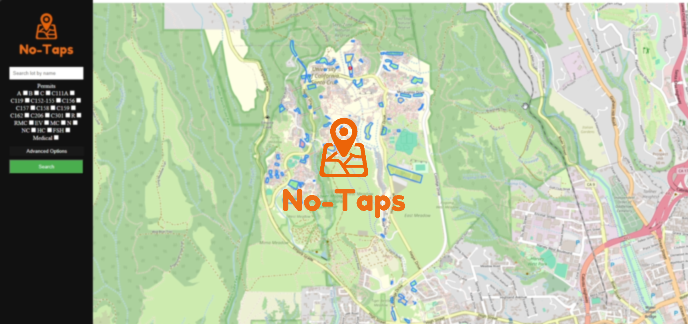

NO-TAPS PARKING APP
A parking app for UCSC.

Developers
- Daniel Peralta
- Fariha Lateef
- Bryce Cheng
- Areeb Durrani
- Duo Yu
- Alonzo Acosta

Tools Used
- HTML/CSS
- Node.js
- Leaflet.js
- MySQL
- Caddy
- Asana
- GitHub
- Docker

About This Project

Parking your car in UCSC has always been inconvenient, problematic, and frustrating. During busy hours, finding available parking can be difficult and can lead to congested roads and increased fuel consumption. Our web app, No-Taps, provides a convenient way for students and visitors to view and report statuses of parking lots around campus.
No-Taps highlights and color codes every parking lot with different color values that correspond the to availability of parking. This system relies on user based reporting to track real-time parking availability. For a selected parking lot, any verified user can submit a rating of 1 - 5 (1 meaning full and 5 being the opposite).
Any highlighted parking lot can be interacted with by the user. When selected, the lot's information (name, location, allowed permits, etc) appears in a bubble above the selection.
To find specific parking lots, users can provide criterias in a search. These criterias include name, allowed permits, parking duration, etc. No-Taps will then narrow down and only display lots that fit the provided criterias.
Being able to know if and where there is parking ahead of time can make it easier to plan out the drive on campus. No-Taps can conveniently proved the information needed for those who commute or visit UCSC.
Since permanently hosting the app wasn't feasible for us, here is a demo video

Develpoment
During development, we utilized SCRUM, an agile project management process that assists teams manage and organize the development of a product. SCRUM involves breaking down a product's development into many 1-2 week long sprints. During each sprint, the team plans, implements, reviews, and reflects on a goal for the product.

Scrum Framework © Scrum.org
The No-Taps team met twice a week (both in-person and online) to plan, discuss, and provide feedback. For planning our sprints, we segmented the project based on what we felt could be done in a week. Each sprint, we assigned each other tasks and would spend about a week working on them. Near the end of the week, we met again to discuss what progress was made and provide feedback. We organized our goals by referencing our “User Stories” which describe features from the point of view of a No-Taps user.
No-Taps Asana board.
My role involved collecting and handling the parking lot data. From resources provided by the school, I gathered data on each parking lot on and off campus. I then compiled all the collected data into a JSON file to make it easier to handle in JavaScript. Using JS, I then worked on developing visuals for parking lot statuses such as highlighting the lot and applying its color.
Parking data JSON
I integrated the functionality of filtering parking lots utilizing a simple function provided by a team member. The function filtered lots based on criterias provided by the user. I developed the interface where the user only needs to select a few checkboxes or input text to filter lots.
Lastly, I cleaned some UI elements by adding icons to make parking lot information more readable. I also included our app logo.

Final Thoughts
This project was a lot of fun to do. I learned a lot about how to develop a full-stack project from start to finish. This project involved both learning and utilizing SCRUM which proved to be a major challenge. However, I now feel prepared for when I will inevitably have to use SCRUM in the industry.